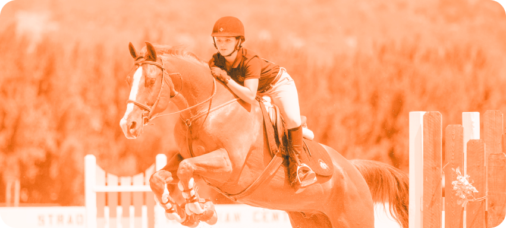

КОНКУР
Конный спорт – это общее название для дисциплин, связанных с верховой ездой на л..

ВЕЛОКРОСС
Велокросс – гонка, которая может проходить на абсолютно любой местности на велосипе..
Конный спорт – это общее название для дисциплин, связанных с верховой ездой на л..
Велокросс – гонка, которая может проходить на абсолютно любой местности на велосипе..